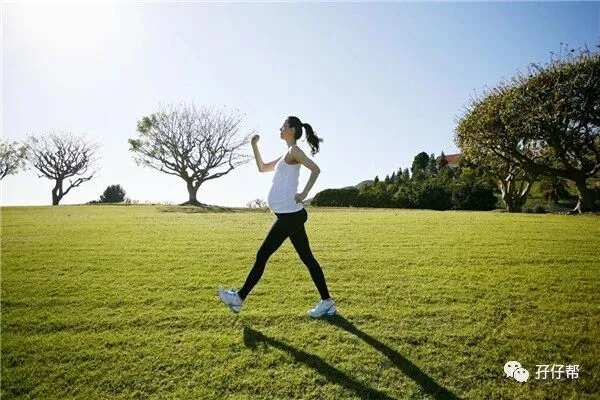
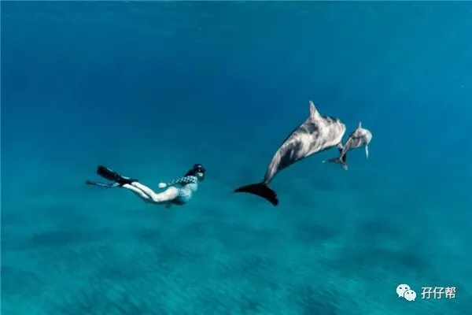
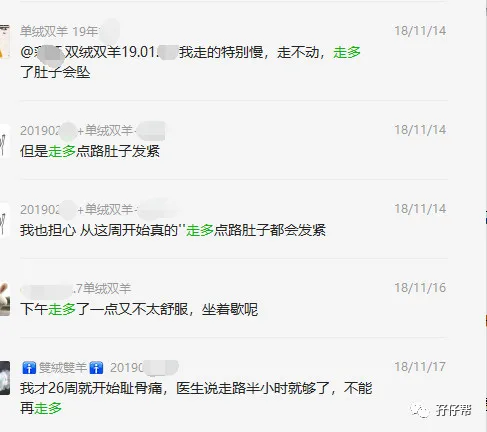
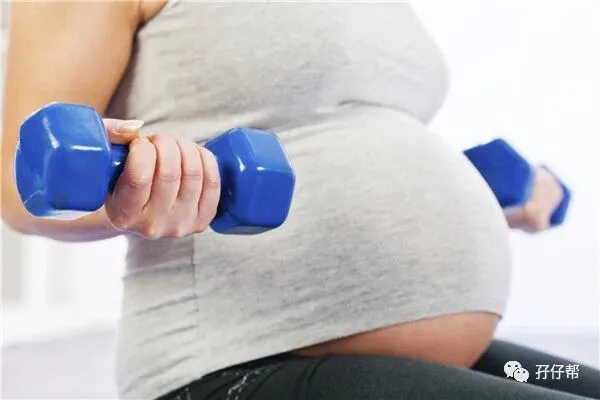
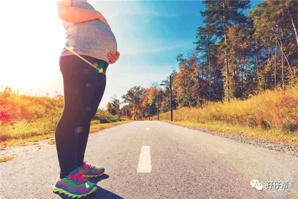

⬆⬆关注孖仔帮，与您分享双胞胎育儿经⬆⬆
文|圆圈妈 一个文思如尿崩的双胎妈妈
图|来自网络
今天的推文是双胞胎孕期群一位妈妈的约稿@口可口可，她想了解下双胞胎妈妈孕期该如何适当运动。
无独有偶，爸爸群有一宝爸说他媳妇孕35周+，上午产检约好剖腹产日期，下午居然毫无征兆破水了，不得不提前生产，怀疑是外出产检比平时走多了导致宫颈口内开。
圆圈妈搜集了些关于双胎妈妈孕期运动的注意事项，整理成文分享给有需要的孕妈。

🔸🔸01🔸🔸
怀上双胞胎，可以运动吗？
双胎妊娠指南中提到，没有证据表明卧床休息可以改善双胎妊娠的结局。
相反，孕期适当运动有助于提高睡眠质量，可缓解孕期不适，减轻压力，改善心情，还是胎教的重要方式之一。
只要你平素身体素质良好，无特殊妊娠期并发症，两胎儿发育良好，各项产检指标都正常，无其他任何不适，适当运动是完全可以的。

但有以下这些情况的孕妈，不适宜运动
贫血或经常感到虚弱和疲倦
孕吐剧烈，电解质絮乱
有慢性支气管炎或哮喘等问题
早孕期先兆流产或出血症状
一胎是早产儿
怀孕期间有早产的迹象，如宫颈管短…
26周后胎盘依然处于前置状态
有先兆子痫或妊娠高血压妊娠
有心脏病，糖尿病，癫痫或甲状腺疾病等疾病
胎儿生长受限
体重不足或超重
看了这些不适宜的情况，我算是明白为什么有些医生不提倡双胎孕妈运动。
因为大多数的双胎孕妈出现以上情况的概率很高，大家几乎都默认：“哎呀，怀着双胞胎还是多躺吧！”
多躺就能万无一失吗？就能保证百分百足月分娩吗？
不管是单胎还是多胎，孕期如果没有适当运动会导致一系列后果，如过早水肿，体重过度增长，心情容易忧郁烦躁，更严重的是很容易形成下肢深静脉血栓形成，危及母体和两胎儿的生命。
因此，双胎妊娠是否可以运动，不能一刀切，需根据自身孕育情况，权衡个中利弊！
举个最简单的例子，为了可以顺产，你总不能腹痛流血了还坚持走路去上班吧。
反之，为了避免早产，你总不能吃喝拉撒睡都在床上解决，不出来走动吧。
🔸🔸02🔸🔸
双胎妈妈如何适当运动
你说双胎和单胎有啥不一样？只是子宫内多了一个胎儿那么简单吗？
非也！双胎孕期的很多注意事项都会区别对待，最明显区别就是孕后期的运动量
对于单胎妈妈，医生是这么鼓励的：“别偷懒，多走走，爬爬楼梯，争取顺产！”
对于双胎妈妈，医生的话风完全是两码事：“别到处走动了，在家歇着吧，双胎顺产可能性不大，能躺着就躺着吧！”
可见，双胎孕期的运动量与单胎的完全不能相提并论，需要分期而论，见机行事。
说说我的经历…
我是单绒双羊，坚持到35周+5，除了孕期饮食，还得益于孕期适当的运动量。
早孕期，因为剧吐，除了外出上班，基本上大门不出二门不迈。
中孕期，上班期间会到楼下空中花园走走，晚饭后会与圆圈爸在家附近散散心，来回2公里左右，每周三次。
晚孕期，因为28周查出宫颈管过短，我拒绝住院后就一直在家卧床保胎。
除了例行产检，基本上不外出走动，床--客厅--厕所，三点一线模式，一直持续到33周，因假性宫缩不得不住院保胎。
在医院保胎期间，被医生叮嘱不能下楼，尽量躺着，于是我就只能在医院走廊外走走看看，5分钟之内又回去继续躺着。
哪怕是去门诊做B超和心电图，都是全程轮椅伺候着，最后坚持到35周+5见红破水剖腹。
我的双胎妊娠也许并不是个很成功的例子，但圆圈兄弟出生都有5斤以上，评分都是10分，没有进温箱，只是在新生儿科呆了几天，我已经心满意足了。
从我的经历不难看出，我孕期所有运动都集中在中孕期。
中孕期（13—28周），胃口好，心情棒，睡眠佳，各种天时地利人和，是整个孕期最爽的阶段，只有这个时候，才会有心思去迈开腿，动起来。
因此，针对双胎不同孕周，我提出以下运动建议。
早孕期如没有先兆流产迹象，自我感觉良好，可以适当走走缓解孕吐，若孕吐剧烈或常有头晕疲惫感，尽量在家多休息。
到了中孕期，经历过早孕期的折磨，身体各项机能渐渐恢复常态，可以适当增加运动量。
若你本身是个运动达人，那就按照自己的节奏来，只要不是太剧烈的运动，那就尽管迈开腿动起来，以自身不感觉疲惫为宜。
如果你孕前就是懒妹子一枚，孕期运动时就要悠着点，选择一些轻柔的运动方式，切勿超出自己身体能承受的范围。
晚孕期几乎与运动绝缘，这话一点都不假！
如果哪个专家让你孕晚期多走动，恐怕你也力不从心了，因为巨大的肚子会遮住你脚下的视线，会让你难以保持平衡而随时重心不稳，摔倒在地。
你可能走路都要扶墙，别指望下楼去闲逛买买买了。
其次，不断增大的子宫会挤到你的五脏六腑，压迫你的肺部，你会有憋气的感觉，需要深呼吸下，才感觉一口气顺畅了。
这样的你，请问还能运动吗？
还有，如果你有缺铁性贫血，那更不能运动了，血容量供应不上来，你会时常觉得头晕目眩，疲惫乏力，也许走着走着就晕倒了。
除了产检需要，不得不外出，晚孕期的运动非常局限，最多就是在客厅里晃悠下，抖抖手，抖抖脚，伸下懒腰就差不多了。
因此，能坐着就别站着，能躺着就别坐着，这是晚孕期对运动的唯一要求。
🔸🔸03🔸🔸
双胎妈妈孕期适合什么运动
对于双胎孕妈而言，最佳的运动方式就是走路。只要你觉得舒服，走路是怀孕期间一种很好的运动方式。
与宝爸一起手挽手，走在空气清新的公园小道上，心情美美哒。
如果你后背痛，耻骨疼或者轻微水肿，缓慢的步行还可以减轻你的不适感。
有些孕前就是运动达人或者舞蹈爱好者的孕妈，可能会尝试着做一些高危运动，比如游泳，举哑铃，跳健身操等。
在此，我不提倡也不反对。
这与孕妇年龄，个人体质和健康水平等有关，是因人而异的。
国外孕妇孕后期还能跳探戈，练瑜伽甚至往泳池终身一跃，这对她们来说，小case！但对于大多数孕妈来说，那可是大BOSS，是天下奇闻！
因为我们身体情况不允许，根本达不到那种境界。
最重要的是，国情不一样，也许你稍微走快点，后面马上就会传来婆婆或妈妈雷鸣般的尖叫声：“慢点，别走那么快，小心我的两孙子！”
🔸🔸04🔸🔸
如果孕期不恰当运动会导致什么后果呢
我们用事实说话吧。
以下截图来自孖仔帮孕期群的孕妈（在此感谢孕妈们的的经验分享）

见过那么多孕后期突然见红破水的案例，总结得出，她们几乎都是近日比平时多走动了，多劳累了。
而我也是在破水前一天，还去门诊部口腔科看智齿，等了3个小时，来回折腾了一个下午...
🔸🔸05🔸🔸
双胎妈妈孕期运动的其他注意事项
✅不要逞能
孕期运动的初衷是让你通过运动感到更有精神和活力，而不是像跑马拉松一样必须坚持走到终点。
你不必给自己设立运动目标，不必要求必须走多少步路，消耗多少卡路里！
请注意，你此刻是孕妇，只要你感到疲倦不适，马上停下来，休息吧！
✅少运动=绝对卧床？NO！
孕后期的产检，医生几乎都会这样叮嘱，少走动，多休息。
这里的 “少走动”并不是让你绝对卧床。
绝对卧床指的是一天24小时不能下床，吃饭是在床上，不是在饭桌上，拉臭臭是在床上，不是在厕所，洗澡也只能在床上擦身，而不是躺在浴缸里….
你见红，破水，宫缩，开指了吗？
如果没有，你完全没有必要这样折腾自己！
你应该很庆幸，你在孕后期还能有尊严地坐在饭桌上悠哉地吃上一口饭！
✅一切以孕妈意愿为主
有些孕妈就是想多走动，有些孕妈就喜欢“葛优躺”…
孕期运动的利与弊是相对的，一切以孕妈的意愿为主，从孕妈和两胎儿的安全出发，不必刻意，不必强求。
随意多一点，自然多一些，方能淡定从容面对孕期那些囧人囧事！
请把文章甩给那些总是让你多运动多运动或者让你少走动少走动的好心人吧！
谢谢好意！俺自有分寸！
参考资料：Babycare， 双胎妊娠指南
---☜✪ The end ✪☞---
本文系圆圈妈sgguy-com原创，来源于孖仔帮，专注双胞胎孕期育儿经验分享，著作权归孖仔帮所有。
关于这个号
谢谢关注！我是圆圈妈
85后，全职双胎妈妈
家有孖仔两枚，圆圈&圈圈
双胞胎育儿公众号：孖仔帮
旨意分享双胞胎育儿经验帮助双胞胎家庭
有经验可循
有组织可靠
希望我的经验对您有所启发
期待与您一起共享双胞胎育儿经
孖仔帮目前有5个微信社群
孕期群，喂养群，闲置群
双胞胎爸爸专属群，双胞胎专属教育群
如需入交流群
请+圆圈妈的微信号sgguy-com
或扫描下方二维码
由圆圈妈邀请入群
添加请注明：
宝妈/宝爸，孕期/已生
长按二维码加圆圈妈好友
往期精彩文章回顾：
105：同卵双胞胎的天敌--双胞胎输血综合征
106：官宣：双绒双羊，单绒双羊，单绒单羊傻傻分不清？一篇消除你所有疑问
215：双胎子宫日记系列|（下）你看不看？双胞胎妈妈直播剖腹产全过程
219：双胞胎准爸爸的生存指南：不做猪一样的队友，活着出来喜当爹
306：真人示范！双胞胎妈妈高难度喂母乳技巧
312：为出生就进NICU的双胞胎新生儿，我必须告诉你这5个通关秘籍
407：嘿！双胞胎孩子的亲子阅读攻略，要来一份吗（1--2岁阶段）
605：看过这份最简单的双胞胎宝宝用品囤货清单，其他的都是将就
608：听说...你在找双胞胎育儿神器，这事儿我熟！
723：双胎妈妈，为什么我不建议你这样坐月子...
我猜你肯定喜欢看上面的文章，对不对嘛？关注孖仔帮，回复文章前面的数字编号即可阅读。
长按识别二维码关注我们
更多孖仔帮双胞胎原创育儿文章，
请猛戳 "阅读原文"
或者直接上圆圈妈的个人博客。
博客链接↓↓
https://www.sgguy.com/twinsbang
#重磅互动#
评论区聊一聊
你希望圆圈妈写什么育儿经验干货？
随便提，万一下篇就写了呢？


